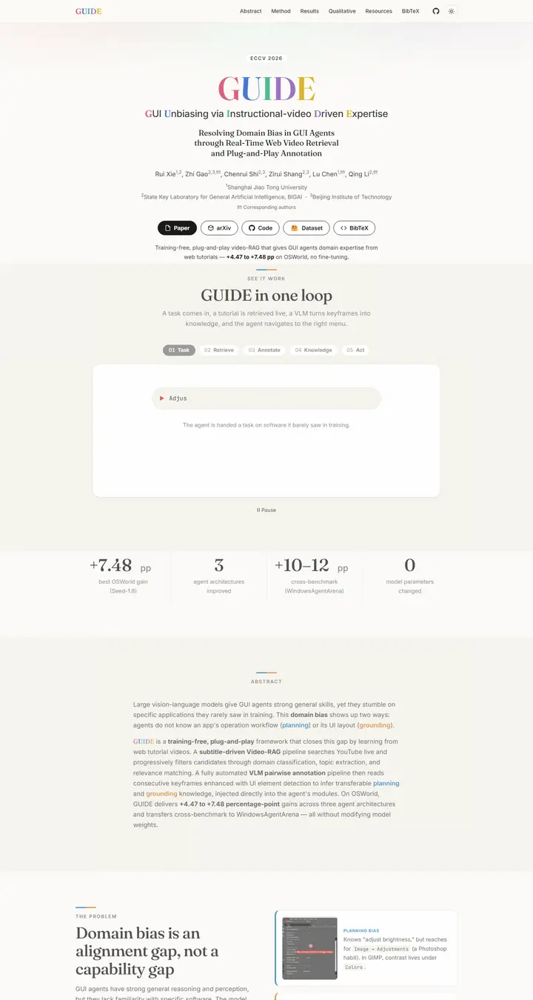

GUIDE: Resolving Domain Bias in GUI Agents through Real-Time Web Video Retrieval and Plug-and-Play Annotation
A tidy editorial page that lets one word wear a bag of macarons: five candy-colored serif capitals on warm paper, and everything else in calm ink with a blue-and-orange thread.

Checked against the rendered page. Sections fade in on scroll, so the 1440x900 shot shows the loop section faded and the stepper on its first panel (mostly empty); the full-page capture was taken with reveal forced visible. Some figures lazy-load blank. Light default with dark toggle (theme both).
Why it is here
Multicolour serif wordmark, a step-chip interactive loop, large serif stat numbers and soft accent rules. Playful and distinctive. The demo card was captured mid-animation and is mostly empty.
Overview
Color Palette
Typography
Fraunces
GUIDE: Resolving Domain Bias in GUI Agents through Real-Time Web Video
Abstract · Method · Results · BibTeX — 0123456789
Inter
GUIDE: Resolving Domain Bias in GUI Agents through Real-Time Web Video
Abstract · Method · Results · BibTeX — 0123456789
JetBrains Mono
GUIDE: Resolving Domain Bias in GUI Agents through Real-Time Web Video
Abstract · Method · Results · BibTeX — 0123456789
Spacing & Shape
Page Modules
Guidelines
More like this

CRAFT: Training-Free Cascaded Retrieval for Tabular QA
A tidy product manual in pale blueprint blue, where every stage wears its own colored edge.

Efficient Self-Evaluation for Diffusion Language Models via Sequence Regeneration
A tidy stack of rounded cards washed in a blue-violet-apricot dawn, signed with a gradient wordmark.

FIGMA: Towards FIne-Grained Music retrievAl
A music journal on warm paper: a heavy Newsreader headline under a red kicker, big red serif numerals for the results, and figures resting in soft cream frames.

GuideDog: A Real-World Egocentric Multimodal Dataset for Blind and Low-Vision Accessibility-Aware Guidance
A quiet monograph page: one serif column, oxblood ink for the links, and a table that blushes only at its own row.

LaMI: Augmenting Large Language Models via Late Multi-Image Fusion
A careful conference handout: Noto Serif headings, navy outlined buttons and soft grey bands taking turns.

PairCoder++: Pair Programming as a Universal Paradigm for Verified Code-Driven Multimodal and Structured-Artifact Generation
A crisp white product page: a blue announcement strip, ink-black pill buttons and every figure on a soft-shadowed card.